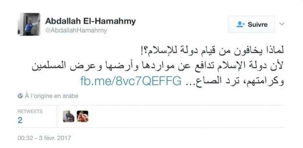
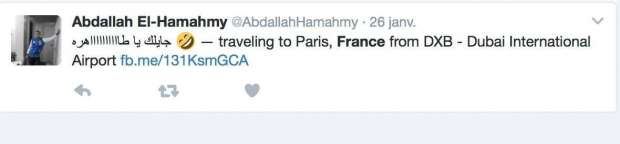

أحدث الأخبار
- باولو يقود هجوم الزمالك أمام رينجرز في دوري الأبطال
- المالية تعفي المطاعم غير السياحية من ضريبة القيمة المضافة بشروط
- "القضاء الإداري" يلزم الجامعة الأمريكية بتحصيل مصروفاتها بالجنيه المصري
- البورصة ترتفع بنسبة 0.52% في نهاية التعاملات
- إعادة فتح موانىء السويس بعد تحسن الأحوال الجوية
- محام: حفظ التحقيقات مع منى مينا في اتهامها بنشر أخبار كاذبة
- نجوى سالم .. كوميديانة انتهت حياتها بمأساة
- الأرصاد: طقس مائل للدفء الاثنين.. والعظمى في القاهرة 22
كيف استخدمت فرنسا السوشيال ميديا لمعرفة الوجه الآخر للحماحمي؟
رضا عبدالله الحماحمي يعرض صورة نجله عبدالله المشتبه به في الهجوم على متحف اللوفر خلال مقابلة مع رويترز
يثير الملف الشخصي للمشتبه في ارتكابه هجوم اللوفر بباريس في الثالث من فبراير الجاري، عبدالله الحماحمي، حيرة المحققين الفرنسيين الذين يرون فيه شخصية غريبة تحمل تناقضين كبيرين.. بين شاب متعلم دارس للقانون وغير معروف للأجهزة الأمنية، وشاب لديه وجه آخر خفي له ميول إسلامية.
وذكرت قناة "أوروبا 1"، في تقرير بموقعها على الانترنت بعنوان "اعتداء اللوفر.. وجهان لعبد الله الحماحمي"، أن السلطات الفرنسية تمكنت من معرفة اسم مرتكب الهجوم في باريس خلال ساعات قليلة بفضل هاتفه المحمول الذي وجد في حقيبة ظهره، إذ تبين أن المشتبه به مصري يبلغ من العمر 29 سنة، موضحة أن المحققين يرون فيه شخصية مثيرة على جميع النواحي.
أسرة ميسورة
ينتمي عبدالله إلى أسرة ميسورة في المنصورة بدلتا مصر، حيث تربى على الإسلام المعتدل، بحسب والده. ولدى عبدالله شقيق يعمل في الشرطة في مصر، كما أنه حاصل على شهادة في القانون من جامعة المنصورة في 2010، قبل أن يسافر للعمل في الإمارات.
بعد الربيع العربي الذي أطاح بالرئيس التونسي زين العابدين بن علي في تونس، ثم حسني مبارك في مصر، أظهرت تغريدات هذا الشاب الدارس للقانون استحسانه الشديد لوصول الإسلاميين للسلطة.
وتوضح القناة أن صورا منشورة على مواقع التواصل الاجتماعي، أظهرته شابا مبتسما له شعر قصير، ويرتدي ملابس رياضية، وكان يجلس أمام حاسوبه في بعض الصور الموجودة لدى والده، والتي يعود تاريخ التقاطها للفترة بين 2009 و2010، وظهر فيها مرتديا بزة ورابطة عنق، تعلوها عيون رقيقة ثابتة خلف نظارته الصغيرة، فيما يعبر عن شخصية تميل إلى الجدية في حياتها.
بعد سفره إلى الإمارات، عمل الحماحمي مسؤولا تجاريا في مدينة الشارقة، إحدى أكثر الإمارات محافظة في البلاد.
ويبين التقرير أنه خلال اعتداء اللوفر، كان والد الحماحمي، وزوجته الحامل بابنه الثاني، يعتقدان أنه في "سفرية عمل" في باريس، وأنه سينهي إقامته بزيارته للوفر.
وجهان للحمامي
توصل المحققون بالتدريج، بحسب التقرير، إلى وجهين متناقضين للشاب المصري، ففي الوقت الذي يرى والداه فيه أنه ليس متطرفا، كتب عبدالله عبر حسابه على تويتر قبل دقائق من الهجوم أنه لا مفاوضات ولا تسوية، ومؤكدا "الثبات وعدم التراجع"، أعقبتها تغريدة أخرى ضمت آية قرأنية عن الجنة كمستقر لمن يقتلون "في سبيل الله".

رسمت التحقيقات التي أجراها المحققون الفرنسيون من خلال تغريداته، صورة شاب دعم الرئيس محمد مرسي المنتمي لجماعة الإخوان المسلمين بعد انتخابه، كما أنه حضر في 2014، في دبي مؤتمراللداعية الهندي المثير للجدل ذاكر نايك.
وإلى جانب تغريدات الحاحمي التي ساهمت في رسم صورة مزدوجة له، كانت هناك أيضا أختام السفر الموجودة على جواز سفره التي تشير إلى رحلات سفره المعتادة إلى مصر في الفترة بين 2012 و2016، وكذلك رحلات إلى تركيا والسعودية.
إعداد دقيق لإقامته في فرنسا
نقطة اخرى أثارت اهتمام المحققين الفرنسيين، تتمثل في الإعداد الدقيق لإقامته في باريس، إذ أنه قدم على طلب تأشيرة الدخول في أكتوبر، وحصل عليها في نوفمبر صالحة لمدة شهر واحد ابتداء من 20 يناير 2017.
ووصل الحماحمي إلى باريس في 26 من الشهر نفسه، وأقام في شقة بسعر 1700 يورو في الاسبوع، تقع على بعد خطوتين من الشانزليزيه، من أجل إقامة "معسكره الرئيسي"، بحسب وصف القناة.

لم يمر سوى يومين حتى اشترى الحماحمي سكينتين كبيرتين من ورشة صناعة أسلحة بيضاء في الباستيل، ودفع ثمنهما نقدا.
وذكر التقرير أن الحماحمي اندفع بهذين السلاحين، نحو جنود الجيش، مرتديا تي شيرت أسود مرسوما عليه جمجمة الموت، قبل أن يسقط مصابا بشدة حينما رد عليه أحد الجنود باطلاق الرصاص.
وذكرت صحيفة "لوباريزيان"، نقلا عن أحد حراس اللوفر، أن الشاب زار المتحف وقضى 3 ساعات، قبل 5 أيام من وقوع الهجوم، موضحة أن المحققين يركزون على معرفة الدوافع التي قادته لشن الهجوم على الجنود.
وأوضحت الصحيفة أن إحدى النقاط التي تثير تساؤلات المحققين، هي سبب تحويله 5 آلاف يورو لمواطن مصري آخر مقيم في بولندا خلال يومي 31 يناير والأول من فبراير، أي أثناء تواجده في فرنسا، الأمر الذي دفع السلطات لتشكيل لجنة دولية للتحقيق في هذا الأمر.
تبني خط دفاعي مثير للدهشة
ويشير تقرير "أوروبا 1" إلى أن الشاب وعائلته يتبنيان خطا دفاعيا مثيرا للدهشة، فبالنسبة للأب، الذي كان مسؤولا كبيرا في جهاز الشرطة قبل أن يتقاعد، لا يمكن أن يرتكب "ابنه البسيط"، الذي لا يتعدى طوله 165 سم، مثل هذه الحوادث.
وإلى جانب رؤية الوالد، فاجأ عبد الله المحققين بأقوال مثيرة للدهشة أيضا، موضحا أنه لم يكن يرغب في مهاجمة قوات الجيش، ولكنه كان يريد القيام بعمل رمزي جدا ضد فرنسا، بتشويه الأعمال الفنية الموجودة في المتحف باستخدام "سبراى ألوان"، تم العثور عليه في حقيبة ظهره.
وذكر التقرير أن الشرطة لم تعثر في الشقة التي استأجرها الشاب على أي ادلة على ارتباطه بأي من الجماعات الجهادية، كما أنه أوضح خلال استجوابه أنه تصرف طوعا دون أي تنسيق مع تنظيم الدولة الإسلامية "داعش".
السلطات تتوقع حادثا إرهابيا
وذكر التقرير أن الكثير من العوامل تدفع المحققين للميل إلى الاعتقاد أن الحادث كان متعمدا، فعلى الرغم من أن الحماحمي نفى أن تكون لديه أي ميول إرهابية، مؤكدا أنه جاء بشكل سلمي من أجل تشويه بعض اللوحات الفنية اعتراضا على تدخل فرنسا في سوريا، والدليل على ذلك وجود عبوات "سبراى ألوان" في حقيبته، إلا أن شهادته تدحضها شهادة صديق له تم استجوابه وفقا للجنة تعاون دولي، والذي أكد أن عبدالله أبلغه أنه لن يعود من فرنسا وطلب منه أن يبيع أشياءه.
وأشارت القناة إلى أن السلطات الفرنسية فقدت أثر الحماحمي منذ تحويله الأموال في أول فبراير وحتى 3 فبراير، حينما كتب تغريدته قبل أقل من نصف ساعة من تنفيذ الهجوم.
وقالت صحيفة "لوباريزيان"، إن حارسا في اللوفر وصف الحماحمي خلال الزيارة الأولى بأنه شاب مبتسم وكان مهتما بالعرض لاسيما في القسم المخصص لمصر القديمة، لكن السؤال هو "لو كان هدف الحماحمي هو إتلاف الأعمال الفنية في المتحف، فلماذا هاجم باستخدام سكين رجال الأمن الموجودين في المدخل؟".


{kind=link}
تعليقات الفيسبوك